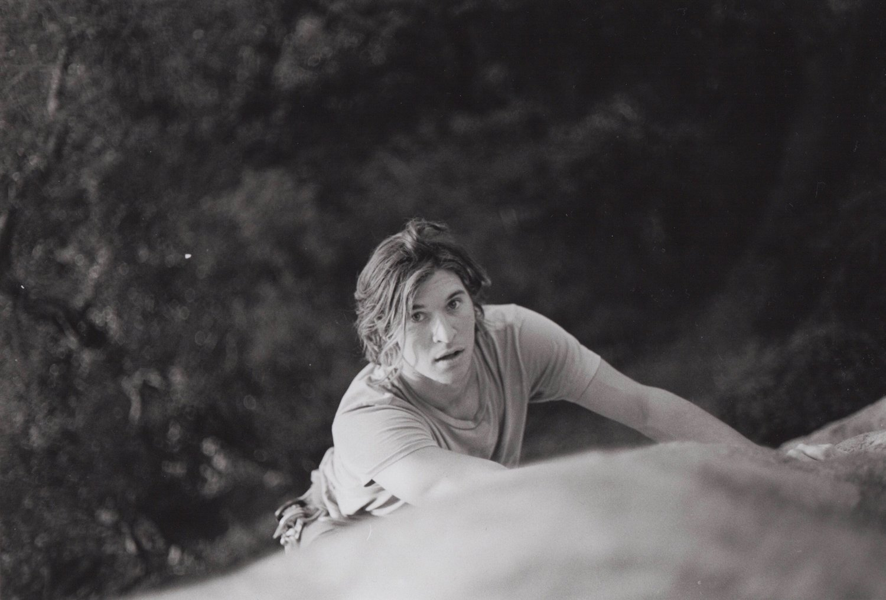

Howdy - I'm Bryan.
I've worn many hats when it comes to running a small business in high school, writing for a surf magazine, taking photos, and producing a documentary.
The thread connecting these experiences is my love for being outside and capturing the places I've been and the people I've met.
I grew up wanting to figure things out for myself and never took interest in just one thing. However, I am deeply connected to my French heritage and decided to major in French Language along with Entrepreneurship at Loyola Marymount University.
My studies provided a good foundation for the course I've embarked on. Directly after graduation I decided to move to France, and I've been working at the Patagonia store in Chamonix, France, for the past 6 months.
I left home with only a backpack, camera, and surfboard. More recently I acquired a pair of touring skis and a bit of climbing gear. I feel my best when I own the least amount of things, so I'm always trying to downsize.
Some other things I like - cooking over a campfire, literature, motorcycles, painting, environmentalism, and all things self-reliance.
Contact: bryanbenattou@gmail.com